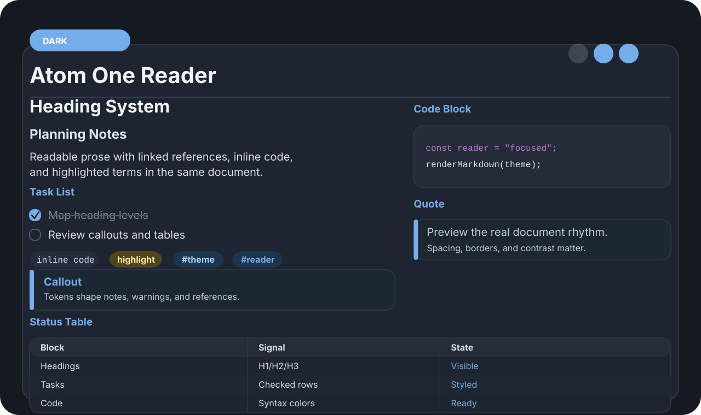
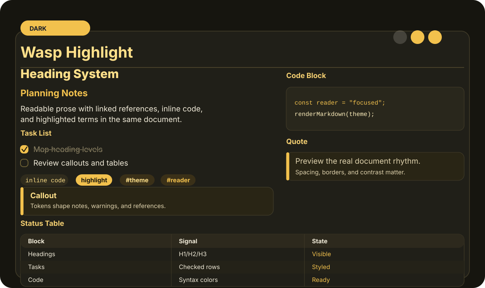
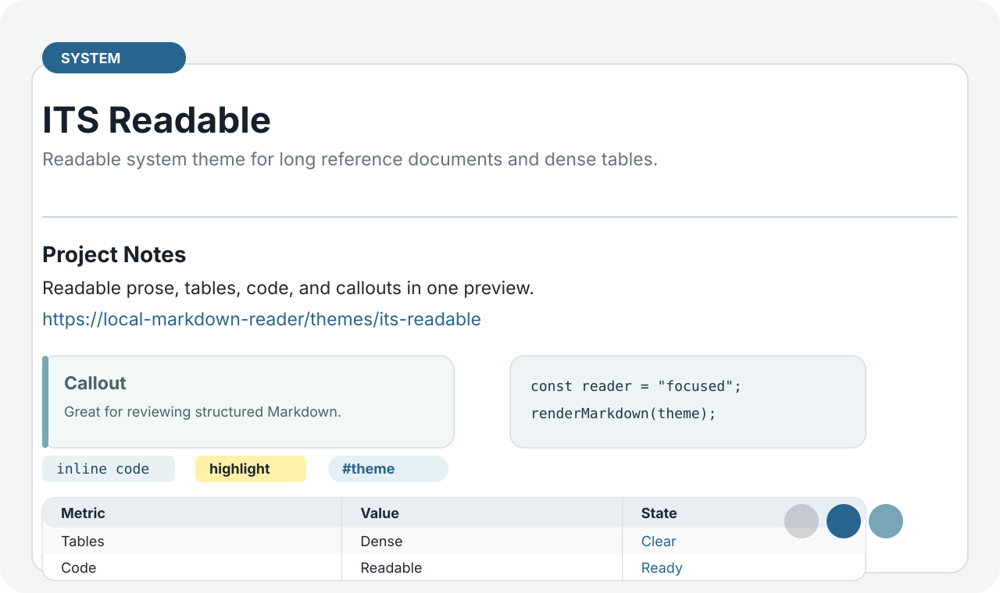

Minimal Focus
Minimal inspired neutral theme with very quiet chrome.
Theme packageGenerated previews for 10 Obsidian-inspired original remote theme packages.

Minimal inspired neutral theme with very quiet chrome.
Theme package
Things inspired light theme for task lists and clean daily notes.
Theme packageAnuPpuccin inspired pastel dark theme with soft lavender accents.
Theme packageBlue Topaz inspired airy theme with saturated blue headings.
Theme packageNord inspired cool dark theme for calm technical reading.
Theme package
Atom One inspired dark theme for code-heavy Markdown notes.
Theme packageObsidianite inspired dark theme with crisp contrast and vivid links.
Theme package
Wasp inspired high-energy dark theme with sharp amber accents.
Theme package
Typewriter inspired warm writing theme with serif document rhythm.
Theme package
Readable system theme for long reference documents and dense tables.
Theme package